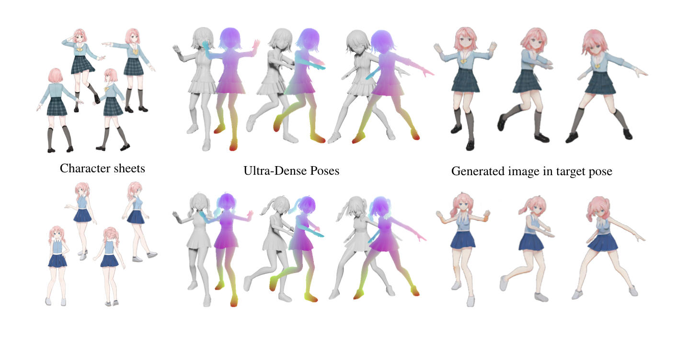

Email | Twitter (DM is open) | Github | Discord | Bilibili
|  |
Step1: Put a reference .PMX avatar (optionally with original textures files) in a .ZIP archive. Step2: Prepare 2 to 4 transparent .PNG images of the desired character. Step3: Send an email to modelcolorize@gmail.com with the .ZIP file and .PNGs as attachments. You will receive a new .PMX avatar customized using the provided character sheet.
Step1: Prepare 2 to 4 transparent .PNG images of the desired character. Step2: Send an email to modelcolorize@gmail.com with the .PNGs as attachments. You will receive a point cloud (not rigged) detected from the provided character sheet.